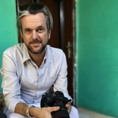
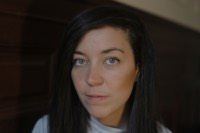
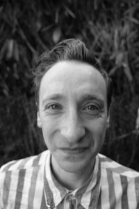

The Guardian
35 people whose festival biography mentions The Guardian. A mention can mean a job, a past job, a grant, a broadcast or an award: read the bio for which.
 Harlo HolmesWorkshop leader, panelist, moderator · 5 editions, 2015–2026Freedom of the Press Foundation
Harlo HolmesWorkshop leader, panelist, moderator · 5 editions, 2015–2026Freedom of the Press Foundation Judith MatloffPanelist, workshop leader · 3 editions, 2017–2024Columbia Graduate School of Journalism
Judith MatloffPanelist, workshop leader · 3 editions, 2017–2024Columbia Graduate School of Journalism Violeta AyalaFilmmaker, panelist · 2 editions, 2017–2021
Violeta AyalaFilmmaker, panelist · 2 editions, 2017–2021
- Joel Stonington2 editions, 2018–2019
 Shirley AbrahamPanelist · 2021
Shirley AbrahamPanelist · 2021 Henry AjderPanelist · 2021
Henry AjderPanelist · 2021 Jimmie Briggs2023
Jimmie Briggs2023
Philip CoxFilmmaker · 2025 Juliane DressnerFilmmaker · 2026
Juliane DressnerFilmmaker · 2026- Andrew FeinsteinPanelist · 2015
- Yance FordPanelist · 2018
 Alexandra GenovaFilmmaker · 2026
Alexandra GenovaFilmmaker · 2026 James HarkinPanelist · 2021
James HarkinPanelist · 2021- Sally HaydenPanelist · 2019
- Johnny HoworthFilmmaker, panelist · 2024
 Kristi JacobsonFilmmaker, panelist · 2016
Kristi JacobsonFilmmaker, panelist · 2016- Sarah JenksFilmmaker · 2021

Lizzie MulveyFilmmaker · 2021- Francesca PanettaPanelist · 2015

Charlie PhillipsPanelist · 2021 Lindsay PoultonPanelist · 2021
Lindsay PoultonPanelist · 2021- Shannon ServicePanelist, filmmaker · 2018
- Edward SnowdenPanelist · 2015
 Richard Jean SoPanelist · 2021
Richard Jean SoPanelist · 2021- Peter H. StonePanelist · 2016
 Laurence TophamFilmmaker · 2021
Laurence TophamFilmmaker · 2021 Lina VdovîiPanelist, filmmaker · 2025
Lina VdovîiPanelist, filmmaker · 2025 Blaž ZgagaPanelist · 2021
Blaž ZgagaPanelist · 2021